Chapter 8: The Advent of Europeans
The 1661 Charter, Suvali 1612, Madras and Fort St George, the French at Pondicherry, the meaning of "factory", Farman versus Parwana, and how the Portuguese and Dutch were countered.
| Year | Paper | Topic | Answer |
|---|---|---|---|
| 1995 | Prelims | Battle of Wandiwash | (B) Battle of Wandiwash — French vs. East India Company |
| 1996 | Prelims | Dupleix as the first European to take part in Indian princely | (B) Dupleix |
Dupleix 42-54 invented the model (back a claimant, station your army at his cost, take territory as payment, sit in his court as Resident); the British EIC, with deeper pockets and a stronger navy, implemented it.
Read it like a film first. Then go to the notes: every fact below is expanded there.
Story spine: A profit-making company discovers that Indian quarrels can buy territory: Dupleix 42-54 proves it at Adyar 1746 and in the 2nd Carnatic War (back a claimant, station an army, take land, sit in court). The EIC reacts at Arcot, wins the 3rd war with royal armies, a navy and deeper pockets, and the Treaty of Paris 1763 leaves it the trade and the road to Plassey.
| Character | Role in the story | Hook |
|---|---|---|
| Josiah Child and John Child | Chairman in London and Governor of Bombay and 'General'; Child's War | Two Childs, two places |
| Dupleix 42-54 | Governor-General of the French EIC; invented the model | The Inventor |
| Anwaruddin 44-49 | Nawab of Carnatic; sent 10,000 cavalry at Adyar; killed at Ambur 1749 | The Nawab Who Needed the Fort |
| Chanda Sahib 49-52 | French candidate in Carnatic; beheaded at Tanjore | Moon and Paris |
| Muzaffar Jung 50-51 | French candidate in Hyderabad; killed at Lakkireddipalli Pass | MuzaFFrance |
| Md Ali 52-95 | EIC candidate in Carnatic; became Nawab in 1754 | Jinnah, pro-British |
| Nasir Jung 48-50 | EIC candidate in Hyderabad; killed by December 1750 | England captain, cricket |
| Salabat Jung 51-62 | Installed as Nizam by Bussy in 1751 | Bussy's Puppet |
| Bussy | Dupleix 42-54's junior; resident at Hyderabad; terror gave 'boochi' | Boochi |
| Robert Clive 57-67 | Took Arcot in 1751 with about 500 men; held it 53 days | The Arcot Hero |
| Godeheu | Replaced the recalled Dupleix 42-54 in 1754 | The Replacement |
| Count de Lally | French State commander in the 3rd war; rude and despised | Lally the Rude |
| Eyre Coote | British State commander; won Wandiwash on 22 January 1760 | Coote of Wandiwash |
| Pratap Singh 39-63 | Maratha Raja of Thanjavur; beheaded Chanda Sahib 49-52 | The Beheader |
| Key term | In plain words |
|---|---|
| Company State | A profit-making company that came to rule territory: 63% of India's territory and 78% of its population by 1857 |
| Charter of 1661 | Gave the EIC the right to build forts, command troops, make war and peace, and exercise civil and criminal jurisdiction; 1676 added the mint |
| Child's War | The Anglo-Mughal War of 1686-90, named after Josiah Child (London) and John Child (Bombay) |
| Parwana | An order from the Subahdar of Bengal; the 1691 Farman was technically one |
| Carnatic Wars | Three Anglo-French wars (1746-48, 1749-54, 1756-63) over the international trade of India |
| Factionalism | A quarrel between rivals ('R vs R') inside a State; the opening for the 2nd Carnatic War |
| Resident | The Company's agent in an Indian king's court, who establishes indirect rule (step 4 of Dupleix 42-54's model) |
| Northern Sarkars | Coastal region (present-day Andhra) given to the French as payment for their army; ceded to the EIC in 1766 |
| Wagner Group | The teacher's analogy: a company that sells military service for money, like the French EIC's army |
| Infantry square | A formation facing outward on every side, so cavalry from any direction meets muskets |
| PM KYC | Pondicherry, Mahe, Karaikal, Yanam, Chandernagore: the five French posts left in 1763 |
Remember it as A company becomes a State: Dupleix 42-54 invents the model at Adyar and in the 2nd war, Clive 57-67 and the Seven Years' War turn it against France, and Paris 1763 leaves the EIC the trade.
| Year and paper | What was asked | The answer or trap | Where in this chapter |
|---|---|---|---|
| Prelims 1995 (Lecture 13, slides 23 and 24) | Which pair is correctly matched? (a) Battle of Buxar: Mir Jafar 57-60 vs Clive 57-67; (b) Battle of Wandiwash: French vs East India Company; (c) Battle of Chilianwala: Dalhousie 48-56 vs Marathas; (d) Battle of Kharda: Nizam vs East India Company | (b). Wandiwash (1760) = French vs the EIC, the decisive battle of the 3rd Carnatic War; the British under Eyre Coote beat the French under Count de Lally. Traps: Buxar (1764) = EIC vs Mir Qasim 60-63 (with Awadh and Shah Alam II 60-06), not Mir Jafar 57-60; Chilianwala (1849) = EIC under Dalhousie 48-56 vs the Sikhs (2nd Anglo-Sikh War); Kharda (1795) = Nizam vs the Marathas | Section 6.2 |
| Prelims 1996 (Lecture 13, slides 25 and 26) | Who were the first European to initiate the policy of taking part in the quarrels of Indian princes with a view to acquire territories? (a) Clive 57-67 (b) Dupleix 42-54 (c) Albuquerque 09-15 (d) Warren Hastings 73-85 | (b) Dupleix 42-54. He invented the model of empire building in the 2nd Carnatic War (backing Muzaffar Jung 50-51 and Chanda Sahib 49-52). Clive 57-67 and Warren Hastings 73-85 used and refined the model; Albuquerque 09-15 belongs to an earlier era of direct conquest (Goa 1510) | Section 5.1 |
| Mains (teacher's board, Lecture 13, slide 9) | "Model of empire building (in India) by trading companies was founded by the French and implemented by the British. Analyse." | Founded by French = the 2nd Carnatic War (Dupleix 42-54's four steps). Implemented by British = future topics (Plassey, Subsidiary Alliance) | Section 5.1 (the model) and Section 6.5 |
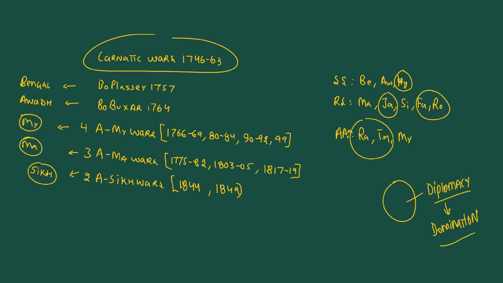
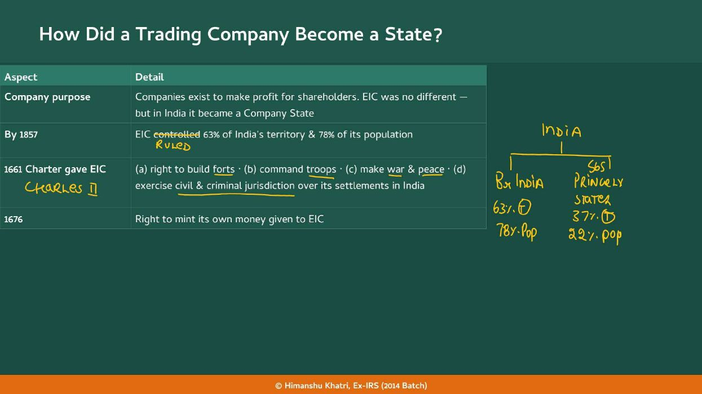
| Year | What the EIC got |
|---|---|
| 1661 Charter (teacher's ink: Charles II 60-85) | The right to build forts |
| The right to command troops | |
| The right to make war and peace | |
| The right to exercise civil and criminal jurisdiction over its settlements in India | |
| 1676 | The right to mint its own money |
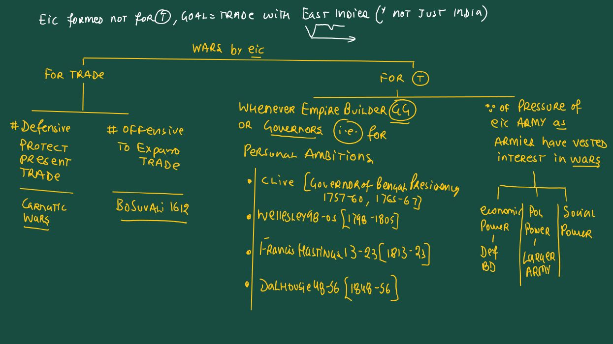
| Empire builder | Post and years |
|---|---|
| Robert Clive 57-67 | Governor of Bengal Presidency, in two stints: 1757-60 and 1765-67 |
| Richard Wellesley 98-05 | 1798-1805 |
| Francis Hastings 13-23 | 1813-23 |
| Dalhousie 48-56 | 1848-56 |
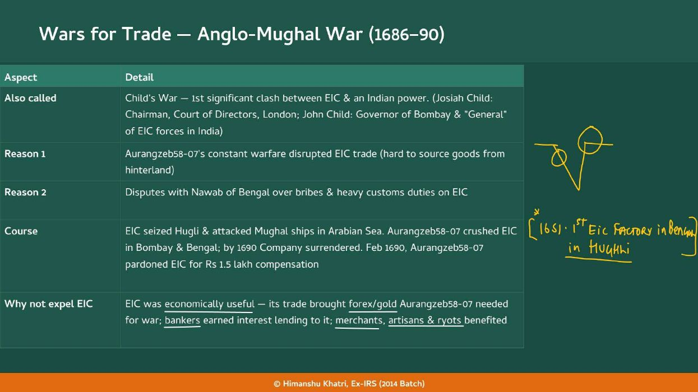
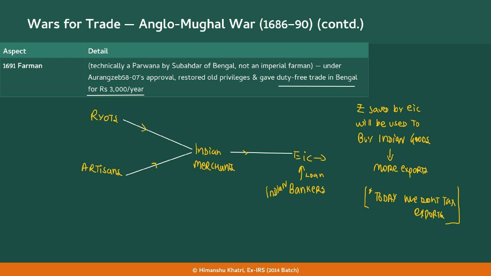
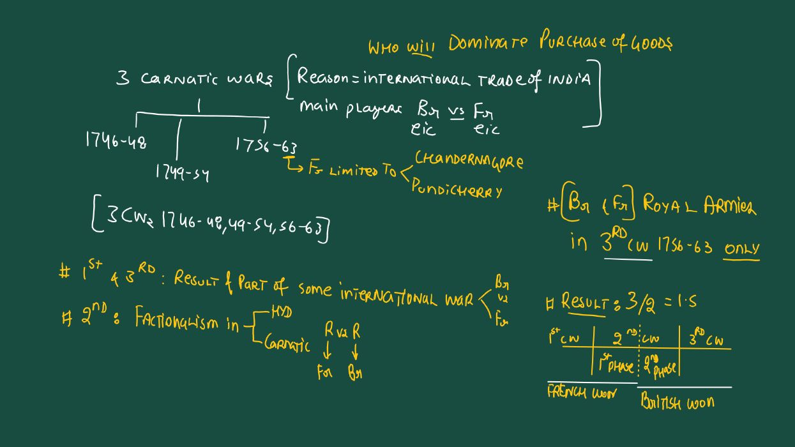
| War | Years | Cause | Decisive event | Treaty | Who won (teacher's board) |
|---|---|---|---|---|---|
| 1st Carnatic War | 1746-48 | The War of the Austrian Succession (1740-48) spilled into India | Battle of Adyar/St Thome (1746) | Treaty of Aix-La-Chapelle (1748) | French |
| 2nd Carnatic War | 1749-54 | Succession disputes in Carnatic and Hyderabad (factionalism) | Ambur (1749); Clive 57-67's Arcot (1751) | Treaty of Pondicherry (1754) | Phase 1: French. Phase 2: British |
| 3rd Carnatic War | 1756-63 | The Seven Years' Global War (1756-63) spilled into India | Battle of Wandiwash (1760) | Treaty of Paris (1763) | British |
| Advantage | Why it mattered |
|---|---|
| 1. Superior artillery | Light, mobile European cannon that could be repositioned rapidly on the battlefield, against which massed cavalry had no answer (link: like the small bronze cannons of Babur 26-30, spelt Babar 26-30 in this handout) |
| 2. Tactical discipline | European-trained infantry fought in coordinated formations, including infantry squares that could hold ground against cavalry charges from any direction |
| 3. Regular cash salaries | Unlike Indian armies, where soldiers were often not paid regularly, European-trained sepoys received regular wages. This created a professional, reliable fighting force with no incentive to desert between campaigns |
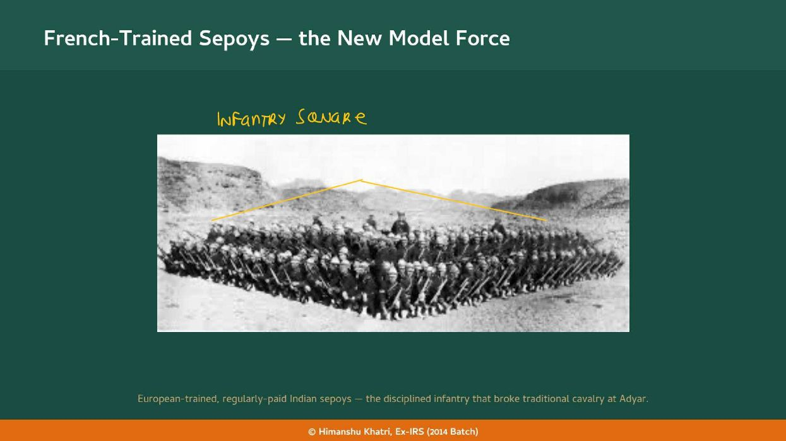
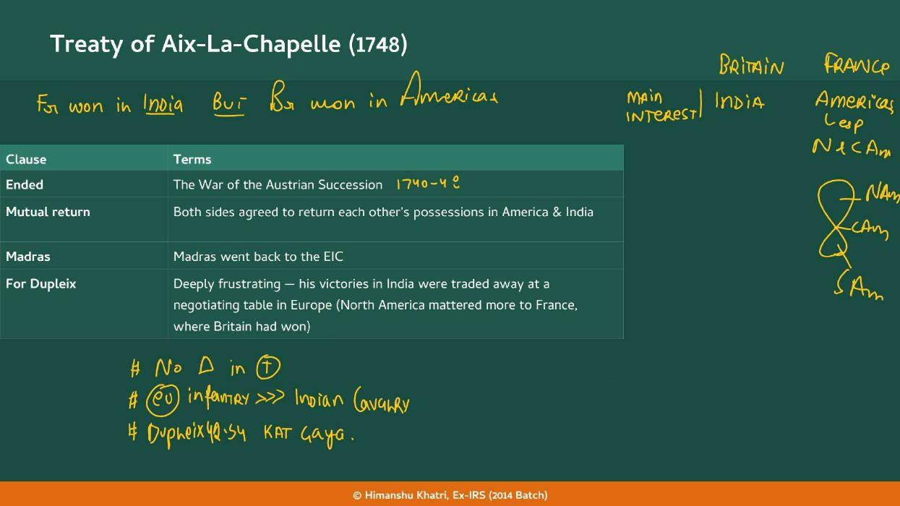
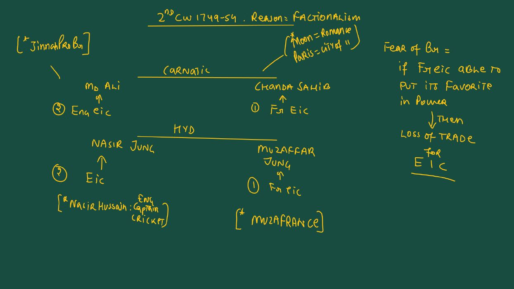
| Place | French EIC's candidate (moved first) | English EIC's candidate (reacted) |
|---|---|---|
| Carnatic | Chanda Sahib 49-52 (son-in-law of Dost Ali Khan 32-40) | Md Ali 52-95 (son of Anwaruddin 44-49) |
| Hyderabad | Muzaffar Jung 50-51 (grandson of Nizam-ul-Mulk 24-48) | Nasir Jung 48-50 (son of Nizam-ul-Mulk 24-48) |
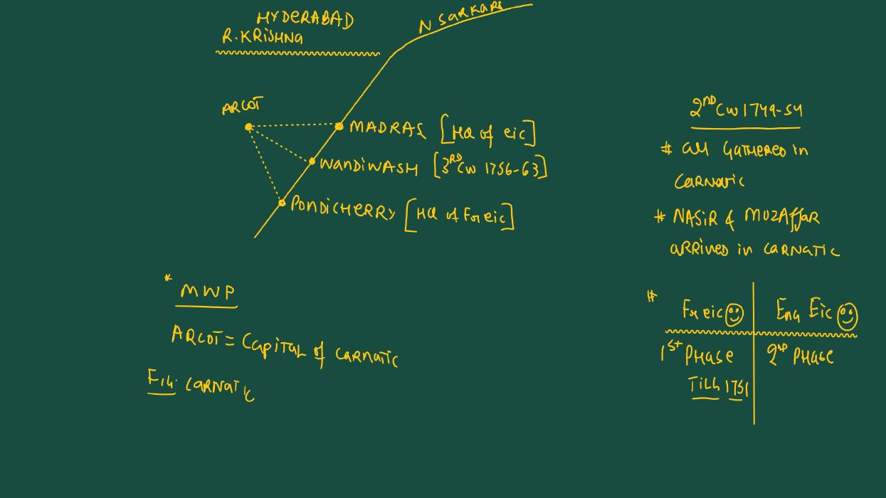
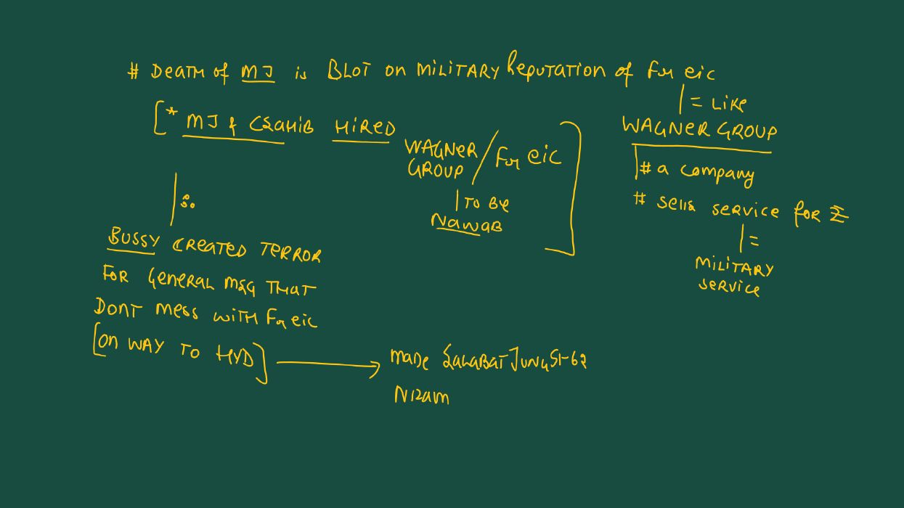
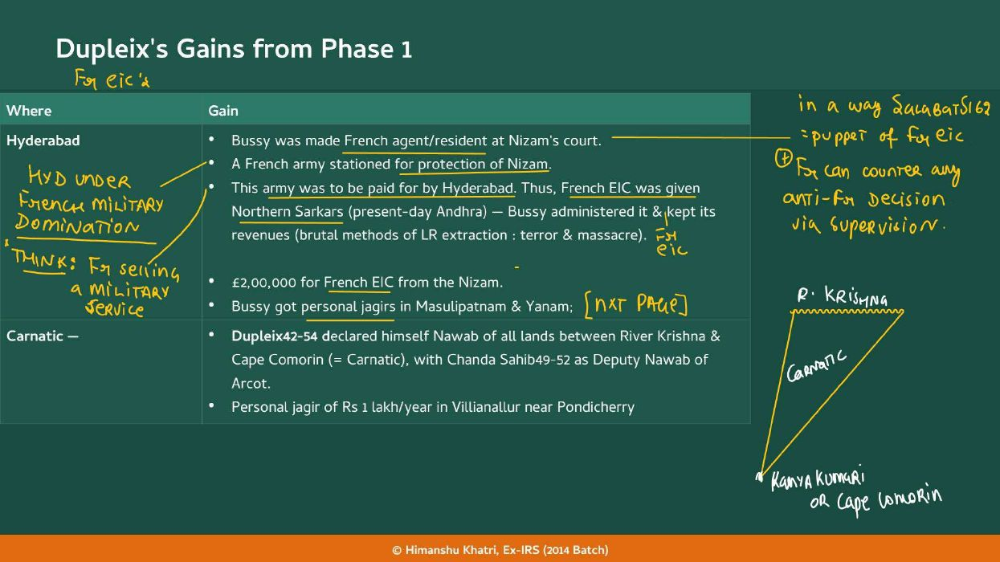
| Where | Gain |
|---|---|
| Hyderabad: the resident | Bussy was made the French resident and agent at the Nizam's court, wielding real political influence |
| Hyderabad: the army | A French army was stationed for the Nizam's protection, and Hyderabad was to pay for it |
| Hyderabad: the payment | The payment was the Northern Sarkars region (present-day Andhra Pradesh): Bussy administered it on behalf of the Nizam and kept its revenues as payment for the French army |
| Hyderabad: cash | 2,00,000 pounds for the French EIC from the Nizam |
| Hyderabad: personal | Bussy extracted personal jagirs in Masulipatnam and Yanam |
| Carnatic: title | Dupleix 42-54 declared himself Nawab of all lands between the River Krishna and Cape Comorin (= Carnatic), with Chanda Sahib 49-52 as his Deputy Nawab of Arcot |
| Carnatic: personal | Dupleix 42-54 extracted a personal jagir of Rs 1 lakh per annum in Villianallur near Pondicherry |
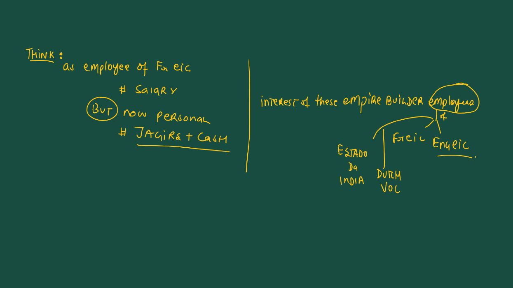
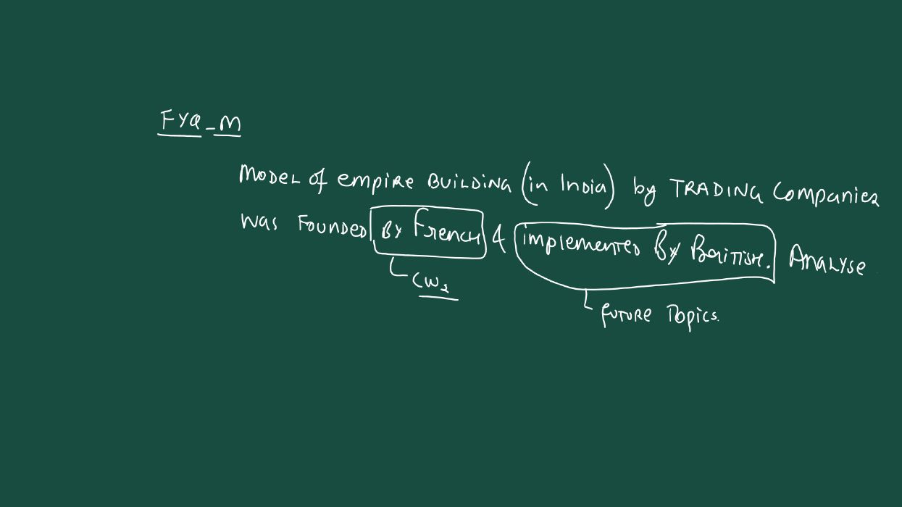
| Clause | Terms | Who smiles (teacher's ink) |
|---|---|---|
| 1. Hyderabad | French influence remained in Hyderabad: (1) Bussy as agent, (2) the French army in Hyderabad, (3) the Northern Sarkars with the French | French |
| 2. Factories | French factories in Pondicherry and Carnatic were retained | |
| 3. Carnatic | Md Ali 52-95 became Nawab of Carnatic: hence EIC influence in Carnatic | British |
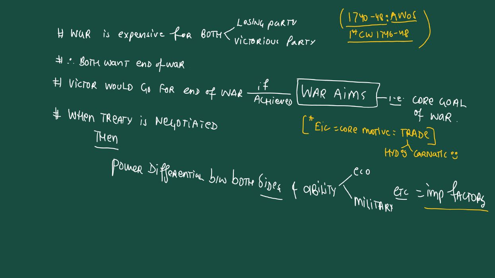
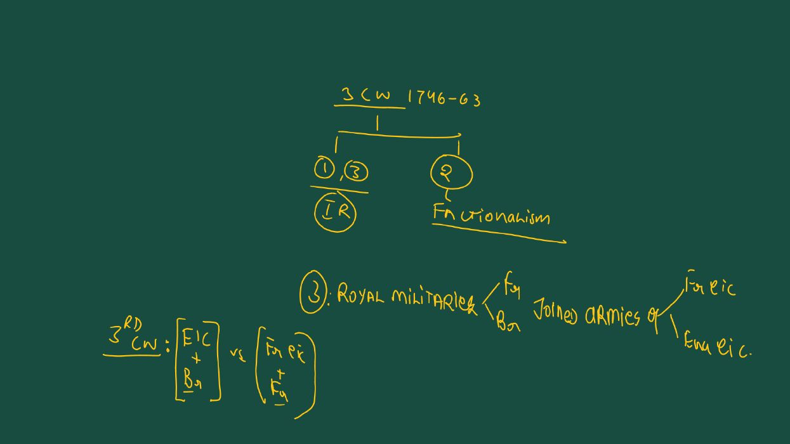
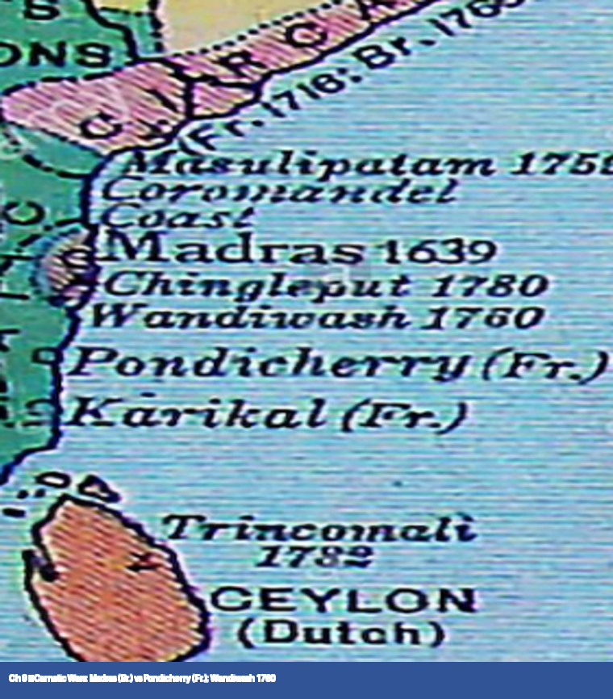
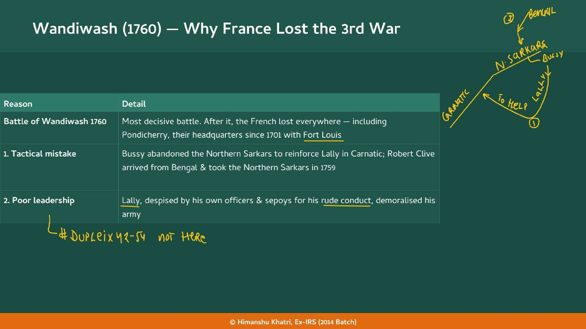
| Reason | Detail |
|---|---|
| 1. Tactical mistake | Bussy abandoned the Northern Sarkars to reinforce Lally in Carnatic. Robert Clive 57-67 arrived from Bengal and took over the Northern Sarkars in 1759 |
| 2. Poor leadership | Lally was despised by his own officers and sepoys for his rude conduct, which demoralised the army |
| 3. Financial weakness | French soldiers went unpaid for months. The French EIC had spent heavily in the War of the Austrian Succession (1740-48) and the first two Carnatic Wars without commensurate gains. In contrast, Britain had been profiting from eastern trade since 1600. British capitalism was mature; feudalism in France ended only after the French Revolution of 1789, while the Industrial Revolution had begun in Britain (1750-1850) |
| 4. Superior British navy | This gave Britain decisive advantages in the coastal warfare of the Northern Sarkars and Carnatic. Britain's navy was able to dominate the Coromandel coast |
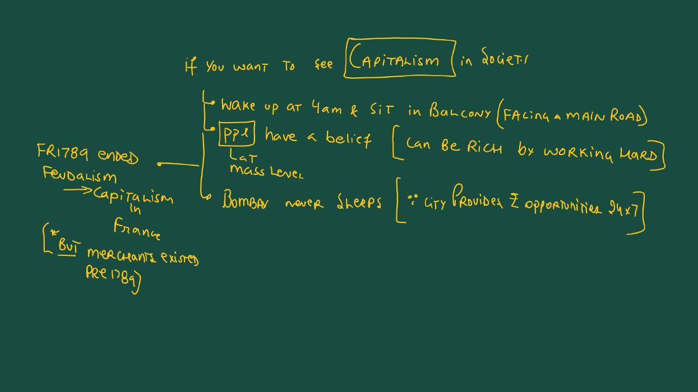
| Factor | Detail |
|---|---|
| 1. France starved Dupleix 42-54 of reinforcements | To preserve its gains from the 1748 Treaty (Aix-La-Chapelle) |
| 2. Leadership | French: the recall of Dupleix 42-54 after the 2nd Carnatic War hurt the chances of French victory; Lally displayed poor leadership in the 3rd Carnatic War. British: Robert Clive 57-67 and Eyre Coote displayed good leadership |
| 3. Superior British navy | British naval dominance of the coast |
| 4. Finances | The EIC was a private joint-stock firm with deep capital; it had accumulated wealth, along with huge monetary gains after Plassey 1757. The French EIC was a State PSU with weak finances. The French economy was weak compared to Britain, which was the world's top economy of the time. Past war expenditure without any formidable gains hurt French capabilities, e.g. Lally's troops went unpaid (the slide adds: unpaid for months, so low morale) |
| 5. Tactical mistakes | Leaving Arcot (the capital of Carnatic) unguarded in the 2nd Carnatic War and leaving the Northern Sarkars unguarded in the 3rd Carnatic War |
| Letter | Post | Where (slide and teacher's ink) |
|---|---|---|
| P | Pondicherry | East coast |
| M | Mahe | West coast (teacher: Malabar) |
| K | Karaikal | East coast |
| Y | Yanam | East coast |
| C | Chandernagore | East (teacher: Bengal) |
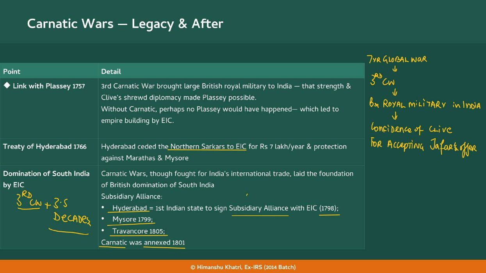
| Year | What happened |
|---|---|
| 1600 | Britain profiting from eastern trade since this year |
| 1612 | Portuguese countered by the EIC (Battle of Suvali: an offensive war for trade) |
| 1650s | Dutch countered by the EIC |
| 1651 | First EIC factory in Bengal, at Hugli (teacher's note) |
| 1661 | Charter: right to build forts, command troops, make war and peace, civil and criminal jurisdiction ★ |
| 1674 | Maratha rule in Tanjore begins under Venkoji (Ekoji), half-brother of Shivaji 74-80 |
| 1676 | EIC gets the right to mint its own money |
| 1686 | Anglo-Mughal War (Child's War) begins, to 1690 ★ |
| 1690 | February: Aurangzeb 58-07 pardons the EIC for Rs 1.5 lakh compensation |
| 1691 | Farman (technically a Parwana): duty-free trade in Bengal for Rs 3,000 a year ★ |
| 1701 | Pondicherry the French headquarters officially, with Fort Louis |
| 1732 | Dost Ali Khan 32-40 Nawab of Carnatic (to 1740) |
| 1740 | War of the Austrian Succession (to 1748); French EIC trade about half of British EIC trade |
| 1742 | Dupleix 42-54 becomes Governor-General of the French EIC (to 1754) ★ |
| 1744 | Anwaruddin 44-49 appointed Nawab of Carnatic by the Nizam of Hyderabad |
| 1746 | 1st Carnatic War (to 1748); Fort St George captured; Battle of Adyar/St Thome ★ |
| 1748 | Treaty of Aix-La-Chapelle: Madras returned to the EIC; Nizam-ul-Mulk 24-48 dies ★ |
| 1749 | 2nd Carnatic War (to 1754); Battle of Ambur: Anwaruddin 44-49 killed, Chanda Sahib 49-52 Nawab ★ |
| 1750 | December: Nasir Jung 48-50 killed; Muzaffar Jung 50-51 declared Nizam |
| 1751 | February: Muzaffar Jung 50-51 killed at Lakkireddipalli Pass; Salabat Jung 51-62 installed; Clive 57-67 takes Arcot (53-day defence) ★ |
| 1754 | Treaty of Pondicherry; Dupleix 42-54 recalled, replaced by Godeheu ★ |
| 1756 | 3rd Carnatic War and the Seven Years' Global War (both to 1763) ★ |
| 1757 | Battle of Plassey, made possible by the Royal troops of the 3rd Carnatic War |
| 1759 | Clive 57-67 takes the Northern Sarkars after Bussy leaves them |
| 1760 | 22 January: Battle of Wandiwash, Eyre Coote defeats Lally ★ |
| 1761 | Siege of Pondicherry |
| 1763 | Treaty of Paris: France back to its pre-1749 position, five posts only; Dupleix 42-54 dies in poverty ★ |
| 1766 | Treaty of Hyderabad: Northern Sarkars ceded to the EIC for Rs 7 lakh a year |
| 1769 | French EIC abolished by France |
| 1798 | Hyderabad: first Indian state to sign a Subsidiary Alliance ★ |
| 1799 | Mysore signs the Subsidiary Alliance |
| 1801 | Carnatic annexed |
| 1805 | Travancore signs the Subsidiary Alliance |
| 1857 | EIC controls 63% of India's territory and 78% of its population |
The 1661 Charter, Suvali 1612, Madras and Fort St George, the French at Pondicherry, the meaning of "factory", Farman versus Parwana, and how the Portuguese and Dutch were countered.
Hyderabad under Nizam-ul-Mulk 24-48 (the Asaf Jahi dynasty), the Carnatic Nawabs, and the three classes of regional States on the teacher's board.
The Royal troops of the 3rd Carnatic War and Clive 57-67 make Plassey 1757 possible; Buxar 1764 is one of the Prelims 1995 pairs; the British implement Dupleix 42-54's model in Bengal.
The Maratha Raja of Thanjavur (Pratap Singh 39-63), Kharda 1795, the Treaty of Hyderabad 1766 and Hyderabad's Subsidiary Alliance of 1798.
Mysore (Subsidiary Alliance 1799) and Travancore (1805); the four Anglo-Mysore wars listed on the board.
Dupleix 42-54's four steps (army at the State's cost, territory as payment, a Resident in court) are the Subsidiary Alliance in embryo.
Read the question, answer in your head, then tap to check.
| What did the EIC become in India by 1857? | A Company State ruling 63% of India's territory and 78% of its population. |
| What four rights did the 1661 Charter give the EIC? | To build forts, command troops, make war and peace, and exercise civil and criminal jurisdiction over its settlements in India. (The right to mint its own money came in 1676.) |
| Under which two conditions did wars for territory happen? | A personally ambitious Governor or Governor-General (an empire builder), and pressure from the EIC Army. |
| Name the four major empire builders. | Robert Clive 57-67 (1757-60 and 1765-67), Richard Wellesley 98-05, Francis Hastings 13-23, Dalhousie 48-56. |
| What is the EIC Army's self-reinforcing war cycle? | Overhyped threats lead to pressure to expand; expansion creates new borders; new borders bring new threats, fictional or real. |
| Why is the Anglo-Mughal War (1686-90) called Child's War? | After Josiah Child (Chairman, Court of Directors) and John Child (Governor of Bombay and "General" of EIC forces in India). |
| How did the Anglo-Mughal War end, and what did the 1691 Farman grant? | Aurangzeb 58-07 crushed the EIC in Bombay and Bengal and pardoned it in February 1690 for Rs 1.5 lakh. The 1691 Farman (technically a Parwana, by the Subahdar of Bengal) restored old privileges and gave duty-free trade in Bengal for Rs 3,000 a year. |
| Why did Aurangzeb 58-07 not expel the EIC? | It was economically useful: forex/gold for his wars, interest for Indian bankers, and gains for merchants, artisans and ryots. |
| Who was Dupleix 42-54? | Governor-General of the French EIC, 1742-54, with ambitions of empire building and of dominating South India's international trade. |
| What caused each of the three Carnatic Wars? | 1st: the War of the Austrian Succession (1740-48). 2nd: succession disputes (factionalism) in Carnatic and Hyderabad. 3rd: the Seven Years' Global War (1756-63). |
| What happened at Adyar/St Thome in 1746? | About 700 French-trained sepoys and 300 French soldiers destroyed Anwaruddin 44-49's 10,000 cavalry on the north bank of the Adyar. |
| Three European military advantages shown at Adyar? | Superior light mobile artillery, tactical discipline (infantry squares), and regular cash salaries. |
| Why is Adyar 1746 a turning point? | It proved a small disciplined European-trained infantry could crush a far larger Indian army; Europeans began interfering in Indian disputes and Indian rulers wanted their military service. |
| What is the Wagner Group analogy? | A company that sells military service; the French EIC's army was hired by Indian claimants in the same way. |
| Treaty of Aix-La-Chapelle (1748)? | Ended the Austrian War; possessions returned in America and India; Madras went back to the EIC. |
| Who backed whom in the 2nd Carnatic War? | Carnatic: Chanda Sahib 49-52 (French) versus Md Ali 52-95 (EIC). Hyderabad: Muzaffar Jung 50-51 (French) versus Nasir Jung 48-50 (EIC). |
| What happened at Ambur (1749) and at Lakkireddipalli Pass (February 1751)? | Ambur: Nawab Anwaruddin 44-49 was killed and Chanda Sahib 49-52 was declared Nawab at Arcot. Lakkireddipalli Pass: Muzaffar Jung 50-51 was killed by the Afghan Nawab of Kurnool, who felt cheated of promised territory. |
| What did the French gain in Hyderabad? | Bussy as resident and agent, a French army paid by Hyderabad through the Northern Sarkars, 2,00,000 pounds, and Bussy's jagirs in Masulipatnam and Yanam. |
| What did Dupleix 42-54 gain in Carnatic? | He declared himself Nawab of all lands between the Krishna and Cape Comorin, with Chanda Sahib 49-52 as Deputy Nawab of Arcot, plus a Rs 1 lakh jagir at Villianallur. |
| What is "boochi"? | A word in Andhra folklore meaning ghost or the feared, derived from Bussy's name, preserving his terror in the Northern Sarkars. |
| State Dupleix 42-54's model of empire building. | Put your candidate in power, station your army at his expense, extract territory as payment, and sit in the court as the real power. |
| What was Dupleix 42-54's critical mistake in Phase 2? | He left the capital Arcot unguarded to focus on Trichinopoly; Clive 57-67 took Arcot and held it for 53 days. |
| Terms of the Treaty of Pondicherry (1754)? | Dupleix 42-54 recalled (Godeheu replaced him); French kept Hyderabad influence, the Northern Sarkars and their factories; Md Ali 52-95 became Nawab of Carnatic. |
| What happened to Chanda Sahib 49-52? | He escaped to Tanjore and was beheaded by Pratap Singh 39-63, the Maratha Raja of Thanjavur. |
| Who led each side in the 3rd Carnatic War? | Count de Lally (French State) with Bussy; Eyre Coote (British State) with Robert Clive 57-67. |
| Four reasons France lost the 3rd Carnatic War? | Bussy abandoned the Northern Sarkars; Lally's poor leadership; financial weakness (unpaid soldiers); the superior British navy. |
| Terms of the Treaty of Paris (1763), and what followed in 1769? | France lost all gains since 1749, kept five posts (Pondicherry, Mahe, Karaikal, Yanam, Chandernagore) and could not keep a strong army or fortify. In 1769 France abolished the French EIC. |
| How are the Carnatic Wars linked to Plassey? | The 3rd Carnatic War brought British Royal troops to India; that strength and Clive 57-67's diplomacy made Plassey possible. |
| Treaty of Hyderabad (1766)? | Hyderabad ceded the Northern Sarkars to the EIC for Rs 7 lakh a year and protection against the Marathas and Mysore. |
| Order of Subsidiary Alliances in the south? | Hyderabad 1798 (the first), Mysore 1799, Travancore 1805; Carnatic was annexed in 1801. |
Tap the card to flip.